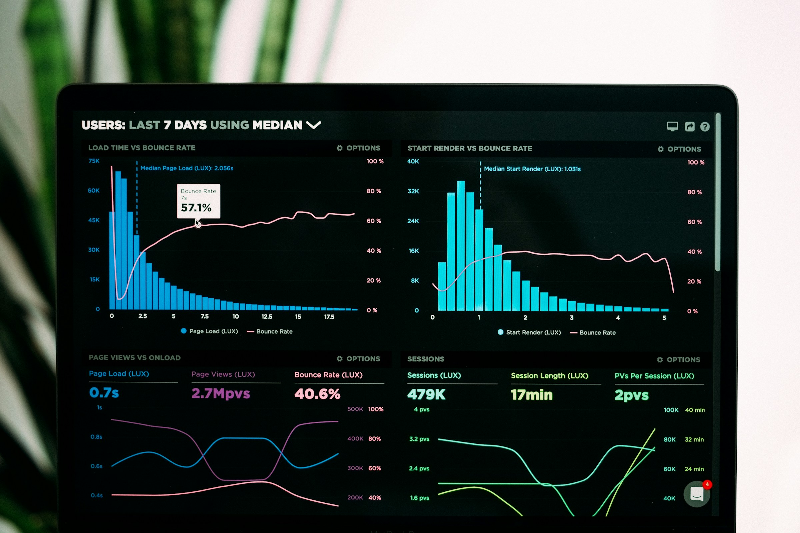

Web Development
Progressive web apps, design systems, and high-traffic platforms with observability baked in.
- React, Next.js, and modern TypeScript stacks
- Accessibility, performance budgets, and SEO
- SSR, edge caching, and API gateways
0%
End-to-end delivery from product design to production operations — built for scale, security, and speed.
Progressive web apps, design systems, and high-traffic platforms with observability baked in.
Ship native-quality experiences on iOS and Android with shared business logic where it makes sense.
Landing zones, modernization, and FinOps-aware architectures across AWS, Azure, and GCP.

Responsible AI from discovery to MLOps — models that deliver measurable business outcomes.
Cadence, automation, and telemetry so your teams ship safely and sleep better.
Research-led product design with systems that scale across web, mobile, and brand touchpoints.
Implement, integrate, and optimize Salesforce for sales, service, and marketing teams with measurable pipeline impact.

Turn raw data into actionable insights with modern warehouses, pipelines, and executive dashboards.

Tell us about your roadmap — we will propose the right mix of engineering, design, and cloud expertise.
Talk to our team